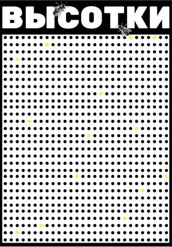

Содержание
Что такое веб-плакат
Попробуйте представить плакат, который реагирует на движение курсора, разворачивает историю при скролле, меняет композицию в ответ на ваши действия. Он живёт в браузере, написан на HTML, CSS и JavaScript — и при этом остаётся плакатом. Со своим высказыванием, визуальным языком и завершённой формой. Именно так устроен веб-плакат — формат, в котором код становится материалом для визуального авторского проекта.
Поэтому, вместо того чтобы начинать с определения, мы пойдём другим путём — разберёмся, из чего веб-плакат состоит, как он работает и где проходят его границы.

Как появился веб-плакат
Веб-плакат возник как учебный проект на первом курсе направления «Коммуникационный дизайн» в Школе дизайна НИУ ВШЭ. Формат придумал Захар День — руководитель профиля «Дизайн и программирование» в университете HSE ART AND DESIGN — когда выстраивал последовательность обучения веб-технологиям для дизайнеров. Логика была достаточно прямолинейной: в первом модуле студенты верстают страницу о шрифте, во втором и третьем создают веб-плакат, а в четвёртом собирают многостраничный уже целый сайт. Каждый следующий проект усложняет предыдущий, наращивая технические навыки постепенно.

Изначально формат решал вполне конкретную задачу — позволял оценивать, насколько студент освоил вёрстку, анимации и базовое программирование. Никакого манифеста или теоретической рамки за ним не стояло. Однако за шесть лет практики накопился массив из сотен студенческих работ, и в этом массиве стали проступать устойчивые закономерности — повторяющиеся композиционные приёмы, типовые технические решения, общие подходы к взаимодействию со зрителем. Формат, который начинался как учебное задание, обрёл собственную логику и разросся до того, что сейчас более 11 групп в Школе дизайна изучают основы веб-вёрстки, создавая веб-плакаты.
Код как материал
Одна из характерных черт веб-плаката — отношение к коду. Здесь HTML, CSS и JavaScript выступают не инструментами разработки в привычном смысле, а скорее материалом, с которым работает автор. Может показаться, что это достаточно спорное утверждение, учитывая существующие конвенции по доступности, удобству чтения кода и его правильной логикой. Однако когда мы внушаем с самого начала, что они должны верстать по всем стандартнам WCAG Примерно так же, как графический дизайнер работает с бумагой, краской или типографской формой: свойства материала влияют на результат, ограничивают и одновременно подсказывают решения.
Эта идея, к слову, не нова. В истории дизайн-образования к ней неоднократно приходили разными путями. Ещё в Баухаусе Йоханнес Иттен строил пропедевтический курс вокруг контакта с материалом — студенты изучали текстуры, фактуры и пластические свойства дерева, металла, ткани, прежде чем переходить к проектированию. Позже, в Ульмской школе дизайна, Томас Мальдонадо развивал идею о том, что понимание материала и технологии должно быть встроено в творческий процесс, а не отделено от него. Веб-плакат следует этой же традиции, только материалом здесь оказывается код, а средой — браузер.
Веб-плакат создаётся на базовом веб-стеке: HTML, CSS и JavaScript. Библиотеки и дополнительные инструменты допустимы, но каркас проекта остаётся прозрачным — его можно открыть, прочитать и разобрать. Проект существует как один HTML-документ.
Единое пространство
Одностраничность веб-плаката работает иначе, чем, скажем, в лендинге или промо-сайте. O различиях между ними мы поговорим в следующих статьях. В веб-плакате одна страница — это единое визуальное пространство, внутри которого разворачивается высказывание автора. Скролл при этом выполняет функцию временно́й оси: он позволяет выстраивать последовательность, ритм, драматургию — примерно так, как монтаж работает в кино. Зритель видит плакат не целиком, а экран за экраном, и порядок этих экранов имеет значение. Вместе с тем формат допускает и одноэкранные решения, где всё происходит в рамках одного видимого поля, а повествование строится через интерактивность — клики, наведение, перетаскивание.
Веб-плакат — это всегда одна страница. Собственно во-многом поэтому он и является «плакатом», сохраняя некую концептуальную и фигуративную рамку.
Что при этом важно: внутри веб-плаката нет навигации в привычном смысле. Нет меню, нет разделов, нет переходов между автономными частями. Модальные окна или всплывающие элементы допустимы — если они расширяют общее пространство, а не дробят его на отдельные «страницы». Как только появляется структура с разделами и вложенными страницами, проект смещается в сторону многостраничного сайта.
Два типа высказывания
На основе анализа студенческих работ за несколько лет, можно выделить два типа того, как веб-плакат выстраивает коммуникацию со зрителем. Первый — коммуникативный. Плакат информирует, анонсирует, приглашает. У него есть конкретное сообщение: тема фестиваля, социальная проблема, рассказ о явлении. Визуальная метафора и интерактивность работают здесь как средства передачи этого сообщения — усиливают его, делают ощутимым, вовлекают зрителя в диалог. Такой подход ближе к традиционной функции плаката, перенесённой в цифровую среду.
Второй — экспериментальный. Здесь плакат становится пространством для исследования самого медиума. Автора интересует, что можно сделать с CSS-анимациями, как код реагирует на действия пользователя, где проходит граница между контролем и случайностью. Технический эксперимент в таких работах и есть содержание — визуальный результат формируется в процессе исследования возможностей браузера.
Этот тип перекликается с тем, что в цифровом искусстве называют creative coding — практикой, где код используется как средство художественного выражения. Работы Рафаэля Розендаля, например, существуют в похожей логике: каждый его проект — это отдельная веб-страница с одной интерактивной визуальной идеей, без интерфейса, без навигации, без утилитарной функции.